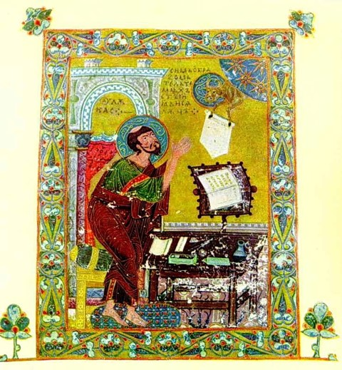
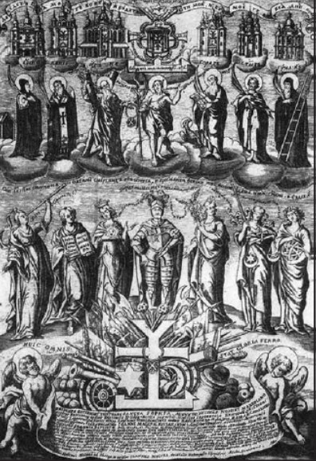

Выравнивание фотографии
Мініатюри. Гравюри. Портрети
Мініатюри. Гравюри. Портрети
Головна сторінка
Пам'ятки давньої історії України
Мініатюри. Гравюри. Портрети
Скульптури.Пам'ятники
Ікони

Євангеліст Лука. Мініатюра з Остромирового Євангелія. 1056-1057 роки.
Родина князя Святослава Ярославича. Мініатюра з «Ізборніка». 1073 р.

Гравюра «Іван Мазепа среди своих добрих справ».
Портрет Петра Конашевича-Сагайдачного з книги «Вірші на жалісній льох шляхетного Рицар Петра Конашевича-Сагайдачного»
Портрет Богдана Хмельницького. Гравюра В. Гондіуса. Середина XVII ст.